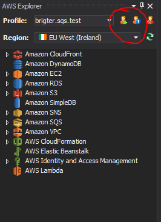
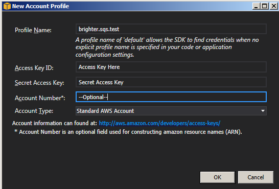
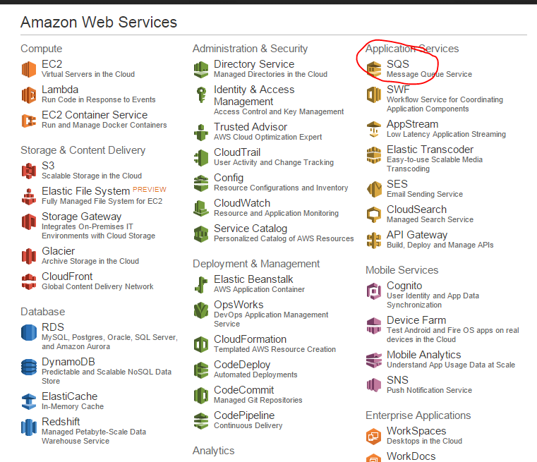
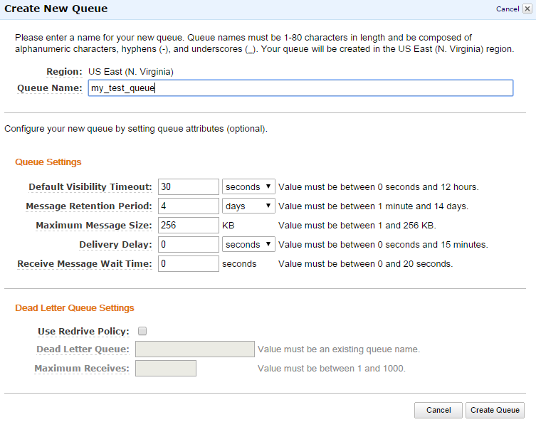
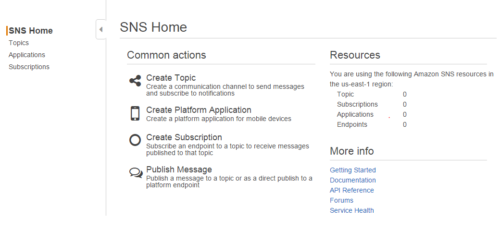
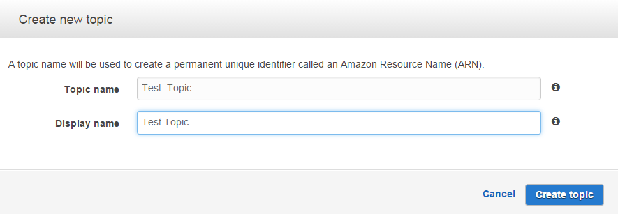
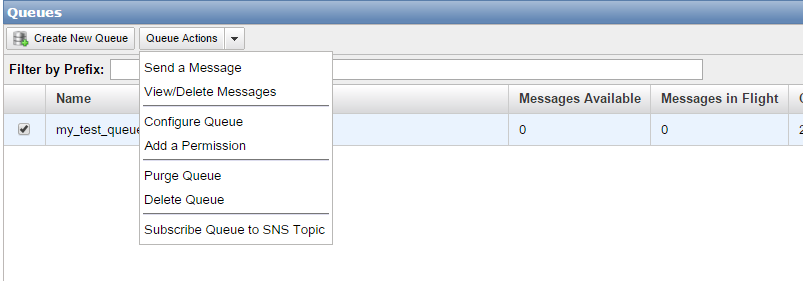

Libraries and supporting examples for use with the Ports and Adapters and CQRS architectural styles for .NET, with support for Task Queues
View the Project on GitHub BrighterCommand/Paramore.Brighter
Getting your application to interact with SQS using Brighter is a trivial task. But, there are couple of things that needs to be done manually.
First, you should have your AWS Access Key ID and Secret Access Key ready to be used by AWSSDK. You can check out the AWS documentation on how to create an account here
After setting up your credentials, you can either create a profile in your local computer or you can use the access and secret keys directly in the application configuration file. Here, we will create a profile using AWS Toolkit on Visual Studio:
Click to add profile button on AWS Explorer window.

Then fill the form to create your profile.

You can find more information about profiles and credentials here.
Unfortunately, brighter will not be creating the queues on request for you; you need to create them manually. To create queues, you should go to your AWS Console.

Then create the queue by filling the form below.

After saving the queue, get the queue url to put it in the application configuration file.
Instead of posting messages directly to the queues, Brighter posts them to a topic so that any queue can listen or stop listening messages without changing any code. AWS SNS is used for that purpose.

You can create a topic by clicking on create topic link 
After that, simply go back to your queue list, select a queue and click on Subscribe Queue to SNS Topic link at Queue Actions menu.

Select your SNS queue and now your queue will get the messages which are sent to the SNS topic.
Please follow the link below to see an example application configuration to use AWS SQS: